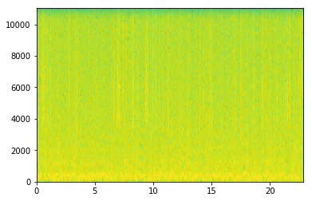

スペクトラグラム
グラフを表示
1 2 3 4 5 | import matplotlib.pyplot as plt import librosa wave, rate = librosa.load("sample.wav") spec = plt.specgram(wave, Fs = rate) |

1 2 3 4 5 | import scipy.io.wavfile as wio import matplotlib.pyplot as plt rate, data = wio.read("sample_solo.wav") spec = plt.specgram(data, Fs = rate) |

画像を保存
1 2 3 4 5 6 7 | import scipy.io.wavfile as wio import matplotlib.pyplot as plt rate, data = wio.read("sample_solo.wav") spec = plt.specgram(data, Fs = rate) plt.axis('off') plt.savefig('specrtum_solo.png', bbox_inches='tight', dpi=50, frameon='false') |